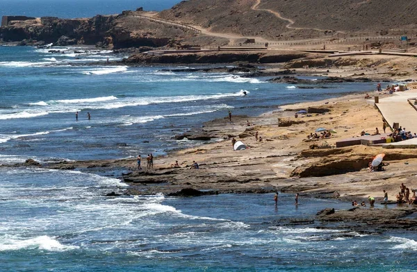

GUÍA PRÁCTICA
Cómo leer una previsión de mar.
Altura, periodo, dirección y viento: cuatro datos para empezar a entender el parte.
Leer artículoNOTICIAS Y GUÍAS
Guías de Surf Islas Canarias y acceso a la actualidad de las fuentes oficiales.
GUÍA PRÁCTICA
Altura, periodo, dirección y viento: cuatro datos para empezar a entender el parte.
Leer artículo
CULTURA DEL MAR
Conocer el lugar, compartir las olas y cuidar el litoral forman parte de cada sesión.
Leer artículo
EN EL RADAR
Fechas, ubicación y enlaces oficiales para seguir la competición de Gáldar.
Leer artículoConsulta las publicaciones de las federaciones y los circuitos, con acceso directo a su información.
Federación Canaria de SurfingFederación Española de SurfingWorld Surf LeagueIBC World TourLA COMUNIDAD SIGUE EN EL AGUA
Reports, eventos y cultura de las islas. Nos vemos en Surf Islas Canarias.